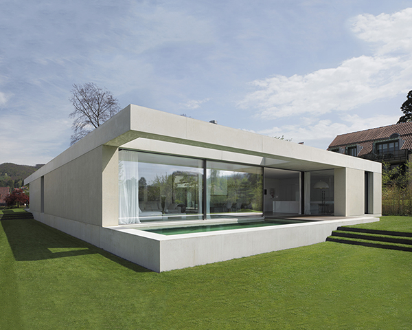

Dorenbach Architekten
Für dieses Projekt von Dorenbach Architekten in Arlesheim (Schweiz) entwickelte Mehlig Fenster- und Türlösungen, die höchste Ansprüche an Gestaltung, Material und Technik erfüllen.
Gefertigt in der eigenen Manufaktur in Wedel bei Hamburg — in einer Material- und Verarbeitungsqualität, die allen Wettbewerbsprodukten überlegen ist und über Generationen schön und wertstabil bleibt.
Produktlinien